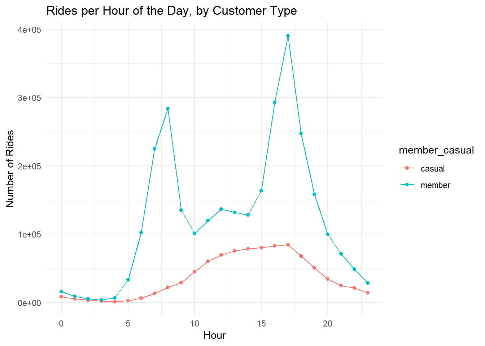

Image generated by Microsoft Designer (Image Creator)
Cyclistic 2019: A Google Data Analytics Capstone
Cyclistic 2019: A Google Data Analytics Capstone
Understanding Ridership Patterns to Drive Membership Growth
Bryan Johns
March 2025
Cyclistic 2019 Final Report
A hypothetical data analysis project, answering a business question for a fictional bikeshare company, analyzing customer behavior and concluding with recommendations to assist in converting casual customers into annual members.
Executive Summary
This report analyzes historical data on Cyclistic users to provide insights for a digital marketing campaign aimed at converting casual riders into annual members. Our findings suggest that casual riders use Cyclistic differently than members, and marketing strategies should leverage these behavioral patterns to drive conversions.
Key Findings
Casual riders use Cyclistic for leisure: Their rides are longer (averaging 60 minutes) with peak traffic on weekends, particularly Saturday afternoons.
Annual members are predominantly commuters: Their rides are shorter (averaging 15 minutes) and occur mainly during weekday commuting hours (8 AM and 5 PM).
Demographic differences: Members tend to be slightly older, with the peak in their early 30s, while casual riders are more concentrated in their mid-20s.
Location trends: Members’ trips are concentrated in downtown Chicago’s central business district (The Loop), while casual riders frequent popular leisure destinations.
Key Visuals

Top Recommendations
Leisure-Focused Marketing: Position membership as a way to enhance casual riders’ existing leisure habits by emphasizing benefits, such as unlimited rides and extended ride times.
Targeted Digital Advertising: Deploy ads on platforms frequented by casual riders, particularly those related to entertainment, travel, and dining, and use geo-targeted ads near high-traffic leisure stations.
Promotional Incentives: Offer weekend-focused memberships, seasonal discounts, referral bonuses, and strategic partnerships with major Chicago events and leisure attractions.

Methodology
.](resources/images/six_phases_of_data_analytics.png)
Image from the Google Data Analytics Professional Certificate.
This analysis follows the framework outlined in Google’s Data Analytics certificate, structured as follows:
- Ask: A clear statement of the business task – converting casual riders into annual members.
- Prepare: Use cleaned historical data from 2019, detailing trip durations, ride frequencies, and station locations.
- Process: Perform data cleaning, transformation, and exploratory analysis.
- Analyze: Identify behavioral trends and customer segment differences.
- Share: Provide key findings and supporting visualizations.
- Act: Deliver actionable marketing recommendations.
Ask
How do annual members and casual riders differ in their use of Cyclistic bikes, and how can this inform marketing strategies to convert casual riders into members?
Summary of the Business Case
Cyclistic, a bike-share company in Chicago, aims to increase its number of annual members, as they are more profitable than casual riders. Rather than targeting new customers, the marketing team wants to convert casual riders into annual members by understanding their riding behaviors.
To support this initiative, I have been assigned to analyze how annual members and casual riders use Cyclistic bikes differently. This analysis will identify key trends in usage patterns, which will inform marketing strategies designed to encourage casual riders to become members.
For reference, the full case study details can be found in the Appendix.
Data Sources
The analysis incorporates cleaned ride data from all 3,817,991 bike rides of 2019, detailing trip durations, ride frequencies, station destinations, and date-time information. The dataset includes demographic details (gender and birth year), allowing for deeper insights.
Google linked to data provided by Lyft and Divvy from their Chicago operations. The data has been made available by Motivate International Inc. under this license.
A Data Dictionary is attached in the Appendix.
Data Cleaning and Manipulation
Google provided a starter template to clean the data, initially covering only Q1 2019 and Q1 2020. This template was significantly modified to clean all of 2019. See full data cleaning script.
Google’s template removed trip duration, gender, and birth year from 2019 and omitted station latitude/longitude from 2020. I retained gender and birth year by excluding 2020 and added 2020’s lat/lng to 2019.
Data cleaning consisted of:
● Extracted station latitude/longitude from 2020 and assigned them to 2019 stations, labeling all but 366 of nearly 4 million rows.
● Removed the tripduration column from 2019.
● Standardized member_casual labels from four categories
to two (member and casual).
● Created columns for day, month, year, season, and day of the week to support aggregation.
● Calculated ride_length since Q1 2020 lacked
tripduration. This initially caused issues, as 2019’s ride
length was in minutes, while 2020’s was in seconds.
● Removed negative ride_length values, including
company-flagged Quality Control rides.
Analysis
Casual riders’ trips last approximately four times longer than members’ trips (one hour vs. 15 minutes).
Members take significantly more trips overall, with regular weekday commuting patterns.
Trip timing differs:
Members peak during weekday commuting hours (8 AM & 5 PM).
Casual riders peak on weekend afternoons.
Trip locations differ:
Members favor The Loop for commuting.
Casual riders frequent tourist/leisure spots (e.g., Shedd Aquarium, Theater on the Lake).
Further insights are available in the exploratory data analysis.
Supporting Visualizations
Ride Length Comparison
Casual Riders: ~60-minute rides
Members: ~15-minute rides
Ride Volume Comparison

- Members take 3x more trips than casual riders (~3 million vs. ~1 million).
Seasonal Trends

Ridership peaks in August and drops in February.
Seasonality affects both groups similarly.
Hourly Ride Patterns

Casual Riders: Peak late morning & afternoon, especially on weekends.
Members: Peak during weekday commuting hours (8 AM & 5 PM).

Top Stations by Rider Type
| Station | Member Rides |
|---|---|
| Canal St & Adams St | 50575 |
| Clinton St & Madison St | 45990 |
| Clinton St & Washington Blvd | 45378 |
| Columbus Dr & Randolph St | 31370 |
| Franklin St & Monroe St | 30832 |
| Kingsbury St & Kinzie St | 30654 |
| Daley Center Plaza | 30423 |
| Canal St & Madison St | 27138 |
| Michigan Ave & Washington St | 25468 |
| LaSalle St & Jackson Blvd | 23021 |
| Station | Casual Rides |
|---|---|
| Streeter Dr & Grand Ave | 53104 |
| Lake Shore Dr & Monroe St | 39238 |
| Millennium Park | 21749 |
| Michigan Ave & Oak St | 21388 |
| Shedd Aquarium | 20617 |
| Lake Shore Dr & North Blvd | 18952 |
| Theater on the Lake | 15024 |
| Dusable Harbor | 12546 |
| Michigan Ave & Washington St | 12228 |
| Adler Planetarium | 11928 |
Members: Cluster in The Loop, likely for commuting.
Casual Riders: Frequent tourist/leisure spots (Millennium Park, Shedd Aquarium, Theater on the Lake, etc.).
Age Distribution
- Members are slightly older, peaking at 30-35, while casual riders peak at 25-30.
Gender Breakdown
Summary
Members dominate total rides and peak during commuting hours.
Casual riders take longer, leisure-oriented trips, peaking on weekends.
Seasonal variation impacts both groups similarly, with low winter activity.
Business Recommendation: Cyclistic should tailor promotions based on these insights (e.g., discount weekend passes for casual riders or commuter incentives for members).
Actionable Recommendations
Purpose of advertising
Promote Membership as a Lifestyle Upgrade: Position membership as an enhancement to the existing leisure experience.
Leverage Member Testimonials: Showcase testimonials from members who use Cyclistic for recreational purposes.
Emphasize Value: Highlight the convenience of unlimited rides, extended trip durations, and cost savings.
Advertising:
Target Relevant Online Audiences: Place ads on travel blogs, event pages, and dining/entertainment guides.
Leverage Local Events for Exposure: Promote Cyclistic at major Chicago events such as St. Patrick’s Day, the Chicago Blues Festival, the Air & Water Show, and Pride, offering limited-time festival passes (e.g., “Skip the traffic with a special Lollapalooza festival pass!”).
Use Geo-Targeted Mobile Ads: Display ads near high-traffic casual rider stations with messages like “Ride unlimited this weekend – try a membership today!”
Implement Personalized Email Marketing: Follow up with casual riders via email (e.g., “You rode three times this month. A membership would’ve saved you $X!”).
Engage Social Media Influencers: Partner with travel vloggers and influencers to create content showcasing scenic rides and group bike tours (e.g., “Museum Ride” or “Scenic Chicago Ride”).
Promotions:
Weekend Membership Plans: Introduce a “Leisure Package” offering extended weekend ride times.
Seasonal Discounts: Launch summer promotions when ridership peaks.
Referral Bonuses: Encourage existing members to invite friends by offering incentives. Casual riders frequently bike in groups.
Trial Memberships: Offer discounted first-month trials to entice casual users (“First month free!”).
Partnership Discounts: Collaborate with local attractions (e.g., discounted admission to museums or restaurants for members).
Gamification & Rewards: Implement a leaderboard tracking miles ridden among friends (similar to Strava) and reward milestones with merchandise or free guest passes.
Commuter crossover marketing.
Promote Bike Commuting as a Smart Alternative: Highlight the convenience and cost-effectiveness of commuting by bike (e.g., “Beat rush hour traffic!”).
Offer Trial Passes During Peak Hours: Provide free trial passes to potential commuters during weekday rush hours (8 AM and 5 PM).
Develop Corporate and Student Memberships: Establish partnerships offering discounts for employees and young professionals.
Integrate with Public Transit: Develop a transit partnership with CTA (Chicago Transit Authority) for bundled bike-and-train/bus memberships.

Conclusion
The analysis reveals clear distinctions between casual riders and annual members, providing a strategic opportunity for conversion. Casual riders tend to use Cyclistic for leisure and social activities, while members prioritize convenience and cost savings. By tailoring marketing efforts, Cyclistic can effectively shift casual users toward membership.
A combination of targeted advertising, compelling promotions, and leisure-focused incentives will maximize conversion rates. Engaging casual riders through event-based marketing, geo-targeted ads, and influencer collaborations will help create stronger brand awareness. Additionally, promotions such as weekend memberships, referral bonuses, and trial offers will lower the barrier to entry.
Finally, strengthening partnerships with corporations, universities, and public transit systems will enhance Cyclistic’s appeal to commuters. By capitalizing on both the leisure and commuter benefits of membership, Cyclistic can expand its reach, encourage long-term adoption, and solidify its position as Chicago’s go-to bikeshare service. Through these strategic initiatives, Cyclistic is well-positioned to drive membership growth while enriching the overall rider experience.

Appendix
Data Dictionary
| Column | Description |
|---|---|
| ride_id | Unique ride identifier. |
| started_at | Ride start time (YYYY-MM-DD HH:MM:SS). |
| ended_at | Ride end time (YYYY-MM-DD HH:MM:SS). |
| rideable_type | Bicycle ID. |
| start_station_id | Starting station ID. |
| start_station_name | Starting station name. |
| end_station_id | Ending station ID. |
| end_station_name | Ending station name. |
| member_casual | Rider type (member/casual). |
| gender | Rider gender (if available). |
| birthyear | Rider birth year (if available). |
| date | Ride date (YYYY-MM-DD). |
| month | Ride month (1–12). |
| day | Ride day (1–31). |
| year | Ride year (YYYY). |
| day_of_week | Day of the week (Mon–Sun). |
| season | Season (Winter, Spring, Summer, Fall). |
| hour | Ride start hour (0–23). |
| ride_length | Duration in minutes. |
| start_lat/lng | Starting location coordinates. |
| end_lat/lng | Ending location coordinates. |
Scenario
Following is the entire setup for the scenario, quoted from the Google Data Analytics Capstone (see PDF here):
You are a junior data analyst working on the marketing analyst team at Cyclistic, a bike-share company in Chicago. The director of marketing believes the company’s future success depends on maximizing the number of annual memberships. Therefore, your team wants to understand how casual riders and annual members use Cyclistic bikes dierently. From these insights, your team will design a new marketing strategy to convert casual riders into annual members. But first, Cyclistic executives must approve your recommendations, so they must be backed up with compelling data insights and professional data visualizations.
Characters and teams
● Cyclistic: A bike-share program that features more than 5,800 bicycles and 600 docking stations. Cyclistic sets itself apart by also offering reclining bikes, hand tricycles, and cargo bikes, making bike-share more inclusive to people with disabilities and riders who can’t use a standard two-wheeled bike. The majority of riders opt for traditional bikes; about 8% of riders use the assistive options. Cyclistic users are more likely to ride for leisure, but about 30% use the bikes to commute to work each day.
● Lily Moreno: The director of marketing and your manager. Moreno is responsible for the development of campaigns and initiatives to promote the bike-share program. These may include email, social media, and other channels.
● Cyclistic marketing analytics team: A team of data analysts who are responsible for collecting, analyzing, and reporting data that helps guide Cyclistic marketing strategy. You joined this team six months ago and have been busy learning about Cyclistic’s mission and business goals—as well as how you, as a junior data analyst, can help Cyclistic achieve them.
● Cyclistic executive team: The notoriously detail-oriented executive team will decide whether to approve the recommended marketing program.
About the company
In 2016, Cyclistic launched a successful bike-share offering. Since then, the program has grown to a fleet of 5,824 bicycles that are geotracked and locked into a network of 692 stations across Chicago. The bikes can be unlocked from one station and returned to any other station in the system anytime.
Until now, Cyclistic’s marketing strategy relied on building general awareness and appealing to broad consumer segments. One approach that helped make these things possible was the flexibility of its pricing plans: single-ride passes, full-day passes, and annual memberships. Customers who purchase single-ride or full-day passes are referred to as casual riders. Customers who purchase annual memberships are Cyclistic members.
Cyclistic’s finance analysts have concluded that annual members are much more profitable than casual riders. Although the pricing flexibility helps Cyclistic attract more customers, Moreno believes that maximizing the number of annual members will be key to future growth. Rather than creating a marketing campaign that targets all-new customers, Moreno believes there is a solid opportunity to convert casual riders into members. She notes that casual riders are already aware of the Cyclistic program and have chosen Cyclistic for their mobility needs.
Moreno has set a clear goal: Design marketing strategies aimed at converting casual riders into annual members. In order to do that, however, the team needs to better understand how annual members and casual riders differ, why casual riders would buy a membership, and how digital media could affect their marketing tactics. Moreno and her team are interested in analyzing the Cyclistic historical bike trip data to identify trends.
Note that data-privacy issues prohibit you from using riders’ personally identifiable information. This means that you won’t be able to connect pass purchases to credit card numbers to determine if casual riders live in the Cyclistic service area or if they have purchased multiple single passes.
Three questions will guide the future marketing program:
- How do annual members and casual riders use Cyclistic bikes differently?
- Why would casual riders buy Cyclistic annual memberships?
- How can Cyclistic use digital media to influence casual riders to become members?
Moreno has assigned you the first question to answer: How do annual members and casual riders use Cyclistic bikes differently?
You will produce a report with the following deliverables:
1. A clear statement of the business task
2. A description of all data sources used
3. Documentation of any cleaning or manipulation of data
4. A summary of your analysis
5. Supporting visualizations and key findings
6. Your top three recommendations based on your analysis
Source: Freepik